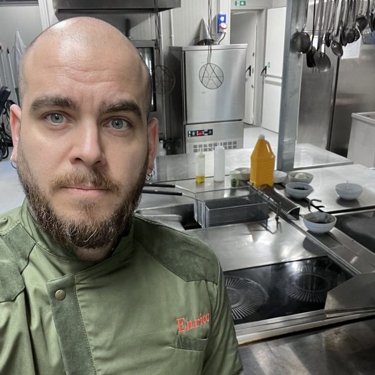
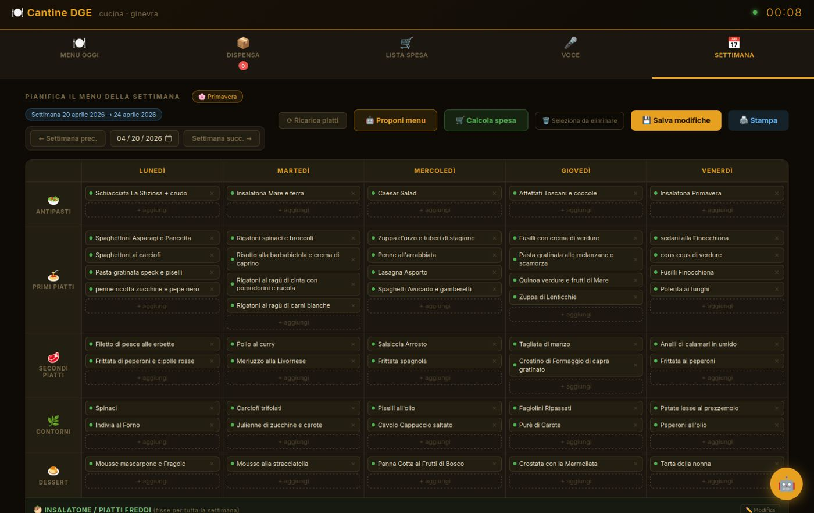
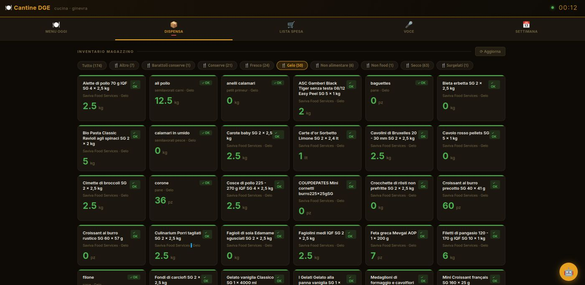
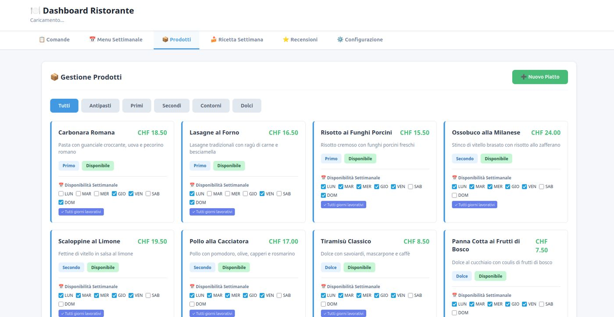
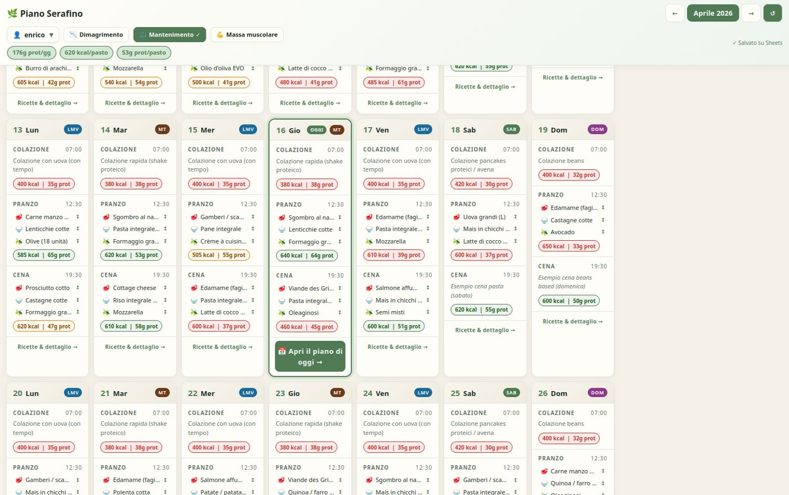

Je suis Enrico La Noce, chef depuis vingt ans en restauration collective et en événementiel. Quand un problème revient tous les jours en cuisine, je ne me contente pas de le subir : je fabrique l'outil qui le règle.

Un bon menu de collectivité, c'est un plat que toute une brigade peut refaire chaque jour, avec le même goût, dans le bon food cost et sans gaspiller.
Partir du client, de la saison et du budget. Tester la recette, puis l'écrire en fiche technique claire, avec son coût matière.
Former les équipes pour que la recette marche sur tous les sites, pas seulement dans ma cuisine. Présenter et faire goûter.
Quand la planification, les stocks ou les commandes font perdre du temps, je construis l'outil numérique qui simplifie.
Je les ai développés moi-même, à partir de ce que je vivais en cuisine. Ce sont des démonstrations avec des données d'exemple, que je peux montrer en direct.

Le menu du lundi au vendredi, par catégorie. Propositions de plats selon la saison, calcul de la liste de courses et impression pour l'équipe.

L'inventaire par famille de produits : ce qui reste, ce qui manque, ce qu'il faut commander. Moins de ruptures, moins de produits oubliés au fond du congélateur.

Chaque plat avec sa description, son prix, sa catégorie et ses jours de disponibilité. La carte se met à jour au même endroit pour tout le monde.

Un plan de repas sur la semaine avec calories et protéines par repas, pour des objectifs différents. Utile en milieu scolaire, en entreprise ou en santé.
J'ai aussi développé un assistant de commandes à la voix pour la cuisine, en français et en italien, avec validation par le chef depuis l'application, et une ligne téléphonique qui prend les réservations toute seule. Tout se montre en direct, sur téléphone ou ordinateur.